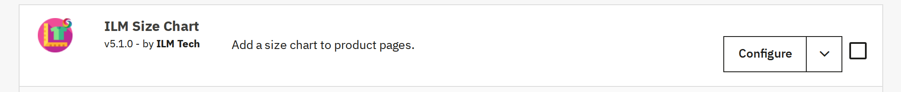
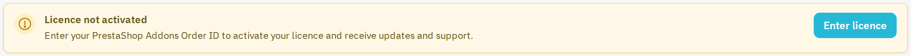
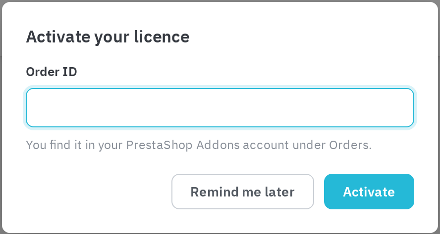

Step 1: Download ilmsizechart.zip
Step 2: Go to Backoffice > Modules > Module Manager > Upload a module > choose the ilmsizechart.zip file to upload.
Step 3: Search for ilmsizechart in the Module Manager and confirm it is listed as installed, then click Configure.

The module listed in Module Manager, ready to configure.
Upgrading: upload the new ilmsizechart.zip the same way, over the installed module. Your size charts, designs and display rules are kept.
ilmsizechart_v4_backup. Two things work differently in version 5:
At the top of the Configure screen, the module asks for your licence. Click Enter licence and type the Order ID of your purchase: the order reference on ilmtech.in (in your order e-mail and under My account > Order history), or the Order ID in your PrestaShop Addons account under Orders. The licence gives you updates and support, and switches on the built-in AI (see AI assistant). Remind me later closes the window without activating.


The licence notice and the activation window.
Once activated, the bar shows the order, the shop domain and the date until which support and updates run. If the shop moves to another domain, the bar offers Move licence to this domain; Remove licence from this shop frees the licence for another shop. Only employees who may install and uninstall modules see the licence bar.